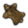

亚洲大陆（Asian regions，亚洲各区域）[1]列出了游戏中亚洲大陆上全部的区域。由于印度次大陆和东印度次大陆下的区域数量众多，为方便阅读这两个次大陆下的区域不包含在本文本文内，请您在对应页面阅读。下表内容超出了 /Europa Universalis IV/history/provinces 文件的范围外，是游戏中1444年11月11日的数据。
注：欧陆风云4中的大陆、次大陆、区域和地区并不完全与现实中相符。
| 目录 | |||
|---|---|---|---|
| 地图 | 区域 | 地区 | |
| 阿拉伯 | 卡西姆 • 亚玛玛 • 内夫得 • 阿西尔 • 巴林 • 佐法尔 • 哈德拉毛 • 迈赫拉 • 麦加 • 麦地那 • 马斯喀特 • 阿曼 • 海盗海岸 • 塔布克 • 蒂哈马也门 • 上也门 • 下也门 | ||
| 中亚 | 阿雷西 • 巴尔喀什 • 中央回部 • 费尔干纳 • 七河 • 喀什噶尔 • 哈萨克斯坦 • 希瓦 • 卡塔兰 • 克孜勒库姆 • 下伊克 • 诺盖 • 鄯善 • 锡尔河 • 特兰斯卡斯皮亚 • 河中 | ||
| 西伯利亚东部 | 布里亚特 • 堪察加 • 科雷马 • 马加丹 • 鄂霍茨克 • 萨哈 • 雅库特 | ||
| 日本 | 中部东部 • 关东东部 • 北海道 • 北陆 • 畿内 • 九州北部 • 山阴道 • 山阳道 • 四国 • 九州南部 • 东北 • 中部西部 • 关东西部 | ||
| 呼罗珊 | 巴尔赫 • 比尔詹德 • 古尔 • 哈烈 • 喀布里斯坦 • 卡拉特 • 莫克兰 • 马什哈德 • 木鹿 • 锡斯坦 | ||
| 朝鲜 | 咸镜道 • 朝鲜东部 • 朝鲜南部 • 朝鲜西部 • 平安道 | ||
| 满洲 | 北依兰哈喇 • 南依兰哈喇 • 黑龙江中部 • 黑龙江东部 • 黑龙江西部 • 南吉林 • 辽宁 • 宁古塔 | ||
| 马什里克 | 阿勒颇 • 杰兹拉 • 巴士拉 • 伊拉克 • 巴勒斯坦 • 叙利亚 • 叙利亚沙漠 • 外约旦 | ||
| 蒙古 | 蒙古东部 • 戈壁 • 内蒙古 • 科布多 • 北准噶尔 • 鄂尔多斯 • 外蒙古 • 南准噶尔 • 唐努乌梁海 • 吐鲁番-哈密 • 乌里雅苏台 | ||
| 华北 | 甘肃东部 • 安徽北部 • 河北北部 • 河南北部 • 江苏北部 • 陕西 • 山东 • 山西 • 河北南部 • 河南南部 • 甘肃西部 | ||
| 波斯 | 阿塞拜疆 • 法尔西斯坦 • 波斯湾海岸 • 波斯外伊拉克部 • 伊斯法罕 • 克尔曼 • 胡齐斯坦 • 洛雷斯坦 • 莫哥斯坦 • 沙西米索 • 塔巴里斯坦 • 大不里士 | ||
| 华南 | 广东东部 • 广西 • 福建 • 湖北 • 湖南 • 江西 • 安徽南部 • 江苏南部 • 台湾 • 广东西部 • 浙江 | ||
| 西藏 | 安多 • 不丹 • 康 • 阿里 • 藏 • 卫 | ||
| 西伯利亚西部 | 中西伯利亚 • 伊尔库茨克 • 伊希姆 • 卡拉 • 鄂毕 • 通古斯 • 尔塔西 | ||
| 西南 | 川北 • 川南 • 四川 • 云贵边陲 • 云贵腹地 | ||
| 安纳托利亚 | 库尔德斯坦 | ||
| 高加索 | 亚美尼亚 • 希尔万 | ||
安纳托利亚
注意：在游戏中 安纳托利亚 区域大部分属于欧洲。
库尔德斯坦
| ID | 名称 | 所有者（1444） | 宗教 | 文化 | 产品 | 贸易节点 | 永久性修正 | |||
|---|---|---|---|---|---|---|---|---|---|---|
| 418 | 4 | 4 | 3 | 阿勒颇 | ||||||
| 2306 | 3 | 3 | 3 | 阿勒颇 | ||||||
| 2307 | 3 | 3 | 2 | 阿勒颇 | ||||||
| 4295 | 2 | 2 | 2 | 阿勒颇 | ||||||
| 4296 | 2 | 2 | 2 | 阿勒颇 |
阿拉伯
卡西姆
| ID | 名称 | 所有者（1444） | 宗教 | 文化 | 产品 | 贸易节点 | 永久性修正 | |||
|---|---|---|---|---|---|---|---|---|---|---|
| 392 | 1 | 1 | 1 | 巴士拉 | ||||||
| 2337 | 1 | 1 | 1 | 巴士拉 | ||||||
| 4273 | 1 | 1 | 1 | 巴士拉 | ||||||
| 4274 | 2 | 1 | 2 | 巴士拉 |
亚玛玛
| ID | 名称 | 所有者（1444） | 宗教 | 文化 | 产品 | 贸易节点 | 永久性修正 | |||
|---|---|---|---|---|---|---|---|---|---|---|
| 2335 | 1 | 1 | 2 | 巴士拉 | ||||||
| 2336 | 1 | 1 | 1 | 巴士拉 | ||||||
| 2339 | 1 | 1 | 1 | 巴士拉 | ||||||
| 4275 | 1 | 1 | 2 | 巴士拉 |
内夫得
| ID | 名称 | 所有者（1444） | 宗教 | 文化 | 产品 | 贸易节点 | 永久性修正 | |||
|---|---|---|---|---|---|---|---|---|---|---|
| 393 | 1 | 1 | 1 | 巴士拉 | 市场 | |||||
| 2338 | 1 | 1 | 1 | 巴士拉 | ||||||
| 4272 | 1 | 1 | 2 | 巴士拉 |
阿西尔
| ID | 名称 | 所有者（1444） | 宗教 | 文化 | 产品 | 贸易节点 | 永久性修正 | |||
|---|---|---|---|---|---|---|---|---|---|---|
| 386 | 2 | 2 | 2 | 什叶派 | 亚丁湾 | |||||
| 391 | 2 | 2 | 2 | 什叶派 | 亚丁湾 | |||||
| 4282 | 2 | 2 | 2 | 什叶派 | 亚丁湾 |
巴林
| ID | 名称 | 所有者（1444） | 宗教 | 文化 | 产品 | 贸易节点 | 永久性修正 | |||
|---|---|---|---|---|---|---|---|---|---|---|
| 394 | 哈萨 | 1 | 1 | 1 | 什叶派 | 巴士拉 | 天然良港 | |||
| 395 | 哈萨 | 2 | 2 | 1 | 什叶派 | 巴士拉 | ||||
| 396 | 哈萨 | 1 | 1 | 2 | 什叶派 | 巴士拉 | ||||
| 2340 | 1 | 1 | 1 | 巴士拉 | ||||||
| 2347 | 哈萨 | 1 | 2 | 1 | 什叶派 | 巴士拉 |
佐法尔
| ID | 名称 | 所有者（1444） | 宗教 | 文化 | 产品 | 贸易节点 | 永久性修正 | |||
|---|---|---|---|---|---|---|---|---|---|---|
| 401 | 1 | 1 | 1 | 亚丁湾 | ||||||
| 2341 | 1 | 1 | 1 | 亚丁湾 | ||||||
| 2342 | 1 | 1 | 1 | 亚丁湾 |
哈德拉毛
| ID | 名称 | 所有者（1444） | 宗教 | 文化 | 产品 | 贸易节点 | 永久性修正 | |||
|---|---|---|---|---|---|---|---|---|---|---|
| 389 | 1 | 2 | 2 | 亚丁湾 | ||||||
| 2343 | 1 | 1 | 2 | 亚丁湾 | ||||||
| 4283 | 2 | 2 | 2 | 亚丁湾 | 天然良港 |
迈赫拉
| ID | 名称 | 所有者（1444） | 宗教 | 文化 | 产品 | 贸易节点 | 永久性修正 | |||
|---|---|---|---|---|---|---|---|---|---|---|
| 402 | 1 | 1 | 1 | 亚丁湾 | ||||||
| 1099 | 1 | 2 | 1 | 亚丁湾 | ||||||
| 4284 | 1 | 1 | 1 | 亚丁湾 |
麦加
| ID | 名称 | 所有者（1444） | 宗教 | 文化 | 产品 | 贸易节点 | 永久性修正 | |||
|---|---|---|---|---|---|---|---|---|---|---|
| 385 | 4 | 4 | 4 | 亚历山大港 | 宗教中心 | |||||
| 2331 | 2 | 3 | 1 | 亚历山大港 | 中转港 | |||||
| 2332 | 1 | 1 | 1 | 亚历山大港 | ||||||
| 4277 | 2 | 3 | 2 | 亚历山大港 | ||||||
| 4278 | 2 | 2 | 2 | 什叶派 | 亚历山大港 |
麦地那
| ID | 名称 | 所有者（1444） | 宗教 | 文化 | 产品 | 贸易节点 | 永久性修正 | |||
|---|---|---|---|---|---|---|---|---|---|---|
| 384 | 3 | 3 | 3 | 亚历山大港 | ||||||
| 2329 | 1 | 1 | 1 | 亚历山大港 | ||||||
| 2330 | 1 | 1 | 1 | 亚历山大港 |
马斯喀特
| ID | 名称 | 所有者（1444） | 宗教 | 文化 | 产品 | 贸易节点 | 永久性修正 | |||
|---|---|---|---|---|---|---|---|---|---|---|
| 399 | 3 | 3 | 3 | 霍尔木兹 | ||||||
| 400 | 4 | 4 | 1 | 霍尔木兹 | 沿海贸易中心 | |||||
| 4286 | 2 | 2 | 1 | 霍尔木兹 |
阿曼
| ID | 名称 | 所有者（1444） | 宗教 | 文化 | 产品 | 贸易节点 | 永久性修正 | |||
|---|---|---|---|---|---|---|---|---|---|---|
| 403 | 3 | 3 | 3 | 霍尔木兹 | ||||||
| 4285 | 2 | 1 | 2 | 霍尔木兹 | ||||||
| 4287 | 2 | 2 | 2 | 霍尔木兹 |
海盗海岸
| ID | 名称 | 所有者（1444） | 宗教 | 文化 | 产品 | 贸易节点 | 永久性修正 | |||
|---|---|---|---|---|---|---|---|---|---|---|
| 397 | 1 | 1 | 1 | 什叶派 | 霍尔木兹 | |||||
| 398 | 2 | 2 | 1 | 霍尔木兹 | ||||||
| 404 | 1 | 1 | 1 | 什叶派 | 霍尔木兹 | |||||
| 2333 | 1 | 1 | 1 | 什叶派 | 霍尔木兹 |
塔布克
| ID | 名称 | 所有者（1444） | 宗教 | 文化 | 产品 | 贸易节点 | 永久性修正 | |||
|---|---|---|---|---|---|---|---|---|---|---|
| 383 | 2 | 2 | 1 | 亚历山大港 | ||||||
| 2328 | 1 | 1 | 1 | 亚历山大港 | ||||||
| 4268 | 1 | 1 | 1 | 亚历山大港 | ||||||
| 4269 | 1 | 1 | 1 | 亚历山大港 |
蒂哈马也门
| ID | 名称 | 所有者（1444） | 宗教 | 文化 | 产品 | 贸易节点 | 永久性修正 | |||
|---|---|---|---|---|---|---|---|---|---|---|
| 387 | 3 | 3 | 2 | 亚丁湾 | 沿海贸易中心 | |||||
| 2346 | 3 | 3 | 1 | 什叶派 | 亚丁湾 | |||||
| 4279 | 3 | 3 | 2 | 亚丁湾 | 天然良港 |
上也门
| ID | 名称 | 所有者（1444） | 宗教 | 文化 | 产品 | 贸易节点 | 永久性修正 | |||
|---|---|---|---|---|---|---|---|---|---|---|
| 390 | 4 | 3 | 4 | 什叶派 | 亚丁湾 | |||||
| 2344 | 1 | 1 | 1 | 什叶派 | 亚丁湾 | |||||
| 4281 | 4 | 4 | 3 | 什叶派 | 亚丁湾 |
下也门
| ID | 名称 | 所有者（1444） | 宗教 | 文化 | 产品 | 贸易节点 | 永久性修正 | |||
|---|---|---|---|---|---|---|---|---|---|---|
| 388 | 4 | 4 | 3 | 亚丁湾 | 沿海贸易中心 | |||||
| 2345 | 2 | 2 | 2 | 什叶派 | 亚丁湾 | |||||
| 4280 | 4 | 4 | 2 | 什叶派 | 亚丁湾 |
高加索
注意：在游戏中 高加索 区域大部分属于欧洲。
亚美尼亚
| ID | 名称 | 所有者（1444） | 宗教 | 文化 | 产品 | 贸易节点 | 永久性修正 | |||
|---|---|---|---|---|---|---|---|---|---|---|
| 419 | 4 | 4 | 3 | 波斯 | ||||||
| 420 | 2 | 2 | 2 | 什叶派 | 波斯 | |||||
| 2202 | 3 | 3 | 3 | 波斯 | ||||||
| 2205 | 2 | 2 | 2 | 波斯 | ||||||
| 4302 | 2 | 2 | 1 | 波斯 |
希尔万
| ID | 名称 | 所有者（1444） | 宗教 | 文化 | 产品 | 贸易节点 | 永久性修正 | |||
|---|---|---|---|---|---|---|---|---|---|---|
| 421 | 3 | 3 | 2 | 什叶派 | 波斯 | 詹姆斯河河口 | ||||
| 424 | 3 | 3 | 3 | 什叶派 | 波斯 | |||||
| 4299 | 2 | 2 | 2 | 什叶派 | 波斯 | |||||
| 4305 | 2 | 2 | 1 | 什叶派 | 波斯 | |||||
| 4340 | 1 | 1 | 1 | 什叶派 | 波斯 |
中亚
阿雷西
| ID | 名称 | 所有者（1444） | 宗教 | 文化 | 产品 | 贸易节点 | 永久性修正 | |||
|---|---|---|---|---|---|---|---|---|---|---|
| 457 | 3 | 3 | 3 | 撒马尔罕 | ||||||
| 2356 | 1 | 1 | 1 | 撒马尔罕 | ||||||
| 2364 | 2 | 2 | 2 | 撒马尔罕 |
巴尔喀什
| ID | 名称 | 所有者（1444） | 宗教 | 文化 | 产品 | 贸易节点 | 永久性修正 | |||
|---|---|---|---|---|---|---|---|---|---|---|
| 477 | 2 | 2 | 2 | 撒马尔罕 | ||||||
| 478 | 2 | 2 | 2 | 撒马尔罕 | ||||||
| 2355 | 1 | 1 | 1 | 撒马尔罕 | ||||||
| 2360 | 1 | 1 | 1 | 撒马尔罕 |
中央回部
| ID | 名称 | 所有者（1444） | 宗教 | 文化 | 产品 | 贸易节点 | 永久性修正 | |||
|---|---|---|---|---|---|---|---|---|---|---|
| 712 | 叶尔羌 | 2 | 2 | 2 | 玉门 | |||||
| 2121 | 叶尔羌 | 2 | 2 | 3 | 玉门 | |||||
| 2192 | 叶尔羌 | 1 | 1 | 2 | 玉门 |
费尔干纳
| ID | 名称 | 所有者（1444） | 宗教 | 文化 | 产品 | 贸易节点 | 永久性修正 | |||
|---|---|---|---|---|---|---|---|---|---|---|
| 458 | 4 | 4 | 4 | 撒马尔罕 | ||||||
| 1967 | 2 | 2 | 3 | 撒马尔罕 | ||||||
| 460 | 4 | 4 | 4 | 克什米尔 |
七河
| ID | 名称 | 所有者（1444） | 宗教 | 文化 | 产品 | 贸易节点 | 永久性修正 | |||
|---|---|---|---|---|---|---|---|---|---|---|
| 459 | 1 | 1 | 3 | 撒马尔罕 | ||||||
| 461 | 2 | 2 | 2 | 撒马尔罕 | ||||||
| 2368 | 2 | 2 | 2 | 撒马尔罕 | ||||||
| 2125 | 2 | 2 | 3 | 克什米尔 | ||||||
| 2126 | 1 | 1 | 2 | 撒马尔罕 |
喀什噶尔
| ID | 名称 | 所有者（1444） | 宗教 | 文化 | 产品 | 贸易节点 | 永久性修正 | |||
|---|---|---|---|---|---|---|---|---|---|---|
| 739 | 叶尔羌 | 2 | 2 | 2 | 撒马尔罕 | 市镇 | ||||
| 2124 | 叶尔羌 | 3 | 2 | 2 | 撒马尔罕 | 市场 | ||||
| 2127 | 叶尔羌 | 1 | 1 | 2 | 什叶派 | 撒马尔罕 | ||||
| 4209 | 叶尔羌 | 2 | 2 | 1 | 撒马尔罕 | |||||
| 4210 | 叶尔羌 | 2 | 2 | 1 | 撒马尔罕 |
哈萨克斯坦
| ID | 名称 | 所有者（1444） | 宗教 | 文化 | 产品 | 贸易节点 | 永久性修正 | |||
|---|---|---|---|---|---|---|---|---|---|---|
| 476 | 6 | 6 | 6 | 撒马尔罕 | ||||||
| 2351 | 1 | 1 | 1 | 撒马尔罕 | ||||||
| 2353 | 1 | 1 | 1 | 撒马尔罕 | ||||||
| 2358 | 2 | 2 | 2 | 撒马尔罕 | ||||||
| 2359 | 1 | 1 | 1 | 撒马尔罕 |
希瓦
| ID | 名称 | 所有者（1444） | 宗教 | 文化 | 产品 | 贸易节点 | 永久性修正 | |||
|---|---|---|---|---|---|---|---|---|---|---|
| 440 | 3 | 3 | 3 | 撒马尔罕 | ||||||
| 441 | 3 | 3 | 3 | 撒马尔罕 | ||||||
| 1973 | 4 | 4 | 4 | 撒马尔罕 | ||||||
| 2362 | 1 | 1 | 1 | 撒马尔罕 | ||||||
| 2370 | 1 | 1 | 1 | 撒马尔罕 |
卡塔兰
| ID | 名称 | 所有者（1444） | 宗教 | 文化 | 产品 | 贸易节点 | 永久性修正 | |||
|---|---|---|---|---|---|---|---|---|---|---|
| 1968 | 2 | 2 | 3 | 撒马尔罕 | ||||||
| 4343 | 1 | 1 | 2 | 撒马尔罕 | ||||||
| 4344 | 2 | 2 | 2 | 撒马尔罕 |
克孜勒库姆
| ID | 名称 | 所有者（1444） | 宗教 | 文化 | 产品 | 贸易节点 | 永久性修正 | |||
|---|---|---|---|---|---|---|---|---|---|---|
| 455 | 1 | 1 | 1 | 撒马尔罕 | ||||||
| 1970 | 2 | 2 | 2 | 撒马尔罕 | ||||||
| 2363 | 1 | 1 | 1 | 撒马尔罕 |
下伊克
| ID | 名称 | 所有者（1444） | 宗教 | 文化 | 产品 | 贸易节点 | 永久性修正 | |||
|---|---|---|---|---|---|---|---|---|---|---|
| 469 | 1 | 1 | 1 | 阿斯特拉罕 | ||||||
| 474 | 2 | 2 | 2 | 阿斯特拉罕 | ||||||
| 2365 | 1 | 1 | 1 | 阿斯特拉罕 | ||||||
| 2367 | 2 | 2 | 2 | 阿斯特拉罕 |
诺盖
| ID | 名称 | 所有者（1444） | 宗教 | 文化 | 产品 | 贸易节点 | 永久性修正 | |||
|---|---|---|---|---|---|---|---|---|---|---|
| 465 | 3 | 3 | 3 | 阿斯特拉罕 | ||||||
| 470 | 2 | 2 | 2 | 阿斯特拉罕 | ||||||
| 471 | 2 | 2 | 2 | 撒马尔罕 | ||||||
| 472 | 2 | 2 | 2 | 撒马尔罕 | ||||||
| 2366 | 1 | 1 | 1 | 阿斯特拉罕 |
鄯善
| ID | 名称 | 所有者（1444） | 宗教 | 文化 | 产品 | 贸易节点 | 永久性修正 | |||
|---|---|---|---|---|---|---|---|---|---|---|
| 710 | 叶尔羌 | 2 | 2 | 3 | 玉门 | 市场 | ||||
| 711 | 叶尔羌 | 1 | 1 | 2 | 玉门 | |||||
| 2123 | 1 | 1 | 2 | 玉门 |
锡尔河
| ID | 名称 | 所有者（1444） | 宗教 | 文化 | 产品 | 贸易节点 | 永久性修正 | |||
|---|---|---|---|---|---|---|---|---|---|---|
| 456 | 1 | 1 | 1 | 撒马尔罕 | ||||||
| 1969 | 1 | 1 | 1 | 撒马尔罕 | ||||||
| 2352 | 3 | 3 | 3 | 撒马尔罕 | ||||||
| 2361 | 1 | 1 | 1 | 撒马尔罕 |
特兰斯卡斯皮亚
| ID | 名称 | 所有者（1444） | 宗教 | 文化 | 产品 | 贸易节点 | 永久性修正 | |||
|---|---|---|---|---|---|---|---|---|---|---|
| 437 | 1 | 1 | 1 | 波斯 | ||||||
| 438 | 1 | 1 | 1 | 波斯 | ||||||
| 439 | 1 | 1 | 1 | 阿斯特拉罕 | ||||||
| 443 | 2 | 2 | 2 | 阿斯特拉罕 | ||||||
| 2349 | 1 | 1 | 1 | 波斯 |
河中
| ID | 名称 | 所有者（1444） | 宗教 | 文化 | 产品 | 贸易节点 | 永久性修正 | |||
|---|---|---|---|---|---|---|---|---|---|---|
| 442 | 5 | 5 | 5 | 撒马尔罕 | ||||||
| 453 | 2 | 2 | 3 | 撒马尔罕 | ||||||
| 454 | 7 | 7 | 7 | 撒马尔罕 | 内陆贸易中心 |
西伯利亚东部
布里亚特
| ID | 名称 | 所有者（1444） | 宗教 | 文化 | 产品 | 贸易节点 | 永久性修正 | |||
|---|---|---|---|---|---|---|---|---|---|---|
| 1055 | 土著 | 2 | 2 | 2 | 西伯利亚 | |||||
| 1056 | 土著 | 3 | 3 | 3 | 西伯利亚 | |||||
| 1057 | 土著 | 3 | 3 | 2 | 西伯利亚 | |||||
| 2446 | 土著 | 3 | 3 | 3 | 吉林 | |||||
| 1058 | 1 | 1 | 1 |  皮毛 | 吉林 |
堪察加
| ID | 名称 | 所有者（1444） | 宗教 | 文化 | 产品 | 贸易节点 | 永久性修正 | |||
|---|---|---|---|---|---|---|---|---|---|---|
| 1034 | 1 | 1 | 1 | 吉林 | ||||||
| 1035 | 1 | 1 | 1 | 吉林 | ||||||
| 1038 | 霍京 | 1 | 1 | 1 | 皮毛 | 吉林 | ||||
| 2440 | 1 | 1 | 1 | 吉林 | ||||||
| 1041 | 土著 | 1 | 1 | 1 | 吉林 |
科雷马
| ID | 名称 | 所有者（1444） | 宗教 | 文化 | 产品 | 贸易节点 | 永久性修正 | |||
|---|---|---|---|---|---|---|---|---|---|---|
| 1036 | 土著 | 1 | 1 | 1 | 吉林 | |||||
| 1037 | 土著 | 1 | 1 | 1 | 吉林 | |||||
| 1039 | 土著 | 1 | 1 | 1 | 吉林 | |||||
| 2439 | 土著 | 1 | 1 | 1 | 吉林 | |||||
| 1040 | 土著 | 1 | 1 | 1 | 吉林 |
鄂霍茨克
| ID | 名称 | 所有者（1444） | 宗教 | 文化 | 产品 | 贸易节点 | 永久性修正 | |||
|---|---|---|---|---|---|---|---|---|---|---|
| 1044 | 土著 | 1 | 1 | 1 | 吉林 | |||||
| 1043 | 土著 | 1 | 1 | 1 | 吉林 | |||||
| 1047 | 土著 | 1 | 1 | 1 | 吉林 | |||||
| 1052 | 土著 | 1 | 1 | 2 | 吉林 |
萨哈
| ID | 名称 | 所有者（1444） | 宗教 | 文化 | 产品 | 贸易节点 | 永久性修正 | |||
|---|---|---|---|---|---|---|---|---|---|---|
| 1042 | 土著 | 1 | 1 | 1 | 吉林 | |||||
| 1046 | 土著 | 1 | 1 | 1 | 吉林 | |||||
| 2438 | 土著 | 1 | 1 | 1 | 吉林 |
雅库特
| ID | 名称 | 所有者（1444） | 宗教 | 文化 | 产品 | 贸易节点 | 永久性修正 | |||
|---|---|---|---|---|---|---|---|---|---|---|
| 1045 | 土著 | 1 | 1 | 1 | 吉林 | |||||
| 1051 | 土著 | 1 | 1 | 1 | 吉林 | |||||
| 1054 | 土著 | 1 | 1 | 1 | 西伯利亚 | |||||
| 2435 | 土著 | 1 | 1 | 1 | 吉林 | |||||
| 2437 | 土著 | 1 | 1 | 1 | 西伯利亚 |
日本
中部西部
| ID | 名称 | 所有者（1444） | 宗教 | 文化 | 产品 | 贸易节点 | 永久性修正 | |||
|---|---|---|---|---|---|---|---|---|---|---|
| 1030 | 4 | 4 | 2 | 日本 | ||||||
| 1835 | 4 | 4 | 3 | 日本 | ||||||
| 4359 | 3 | 2 | 1 | 日本 |
中部东部
| ID | 名称 | 所有者（1444） | 宗教 | 文化 | 产品 | 贸易节点 | 永久性修正 | |||
|---|---|---|---|---|---|---|---|---|---|---|
| 1029 | 3 | 3 | 3 | 日本 | ||||||
| 1839 | 4 | 4 | 3 | 日本 | ||||||
| 4188 | 2 | 2 | 2 | 日本 | ||||||
| 4360 | 2 | 2 | 3 | 日本 |
北海道
| ID | 名称 | 所有者（1444） | 宗教 | 文化 | 产品 | 贸易节点 | 永久性修正 | |||
|---|---|---|---|---|---|---|---|---|---|---|
| 1031 | 1 | 1 | 1 | 日本 | ||||||
| 1032 | 土著 | 1 | 1 | 1 | 日本 | |||||
| 1847 | 1 | 1 | 1 | 日本 | ||||||
| 1852 | 1 | 1 | 1 | 日本 | ||||||
| 4193 | 1 | 1 | 1 | 日本 |
北陆
| ID | 名称 | 所有者（1444） | 宗教 | 文化 | 产品 | 贸易节点 | 永久性修正 | |||
|---|---|---|---|---|---|---|---|---|---|---|
| 1024 | 4 | 4 | 3 | 日本 | ||||||
| 1023 | 3 | 4 | 2 | 日本 | ||||||
| 1837 | 3 | 3 | 3 | 日本 |
关东东部
| ID | 名称 | 所有者（1444） | 宗教 | 文化 | 产品 | 贸易节点 | 永久性修正 | |||
|---|---|---|---|---|---|---|---|---|---|---|
| 1027 | 佐竹家 | 2 | 2 | 2 | 日本 | |||||
| 4190 | 2 | 1 | 2 | 日本 | ||||||
| 4191 | 2 | 2 | 2 | 日本 |
关东西部
| ID | 名称 | 所有者（1444） | 宗教 | 文化 | 产品 | 贸易节点 | 永久性修正 | |||
|---|---|---|---|---|---|---|---|---|---|---|
| 1028 | 6 | 6 | 3 | 日本 | 沿海贸易中心 | |||||
| 1843 | 2 | 2 | 2 | 日本 | ||||||
| 4189 | 3 | 2 | 3 | 日本 |
畿内
| ID | 名称 | 所有者（1444） | 宗教 | 文化 | 产品 | 贸易节点 | 永久性修正 | |||
|---|---|---|---|---|---|---|---|---|---|---|
| 1020 | 6 | 5 | 2 | 日本 | ||||||
| 1021 | 6 | 6 | 3 | 日本 | ||||||
| 1832 | 4 | 3 | 2 | 日本 | ||||||
| 4187 | 2 | 3 | 2 | 日本 |
九州北部
| ID | 名称 | 所有者（1444） | 宗教 | 文化 | 产品 | 贸易节点 | 永久性修正 | |||
|---|---|---|---|---|---|---|---|---|---|---|
| 1014 | 4 | 2 | 3 | 日本 | ||||||
| 1818 | 5 | 3 | 2 | 日本 | 沿海贸易中心 | |||||
| 4182 | 5 | 2 | 2 | 日本 |
九州南部
| ID | 名称 | 所有者（1444） | 宗教 | 文化 | 产品 | 贸易节点 | 永久性修正 | |||
|---|---|---|---|---|---|---|---|---|---|---|
| 1012 | 3 | 3 | 3 | 日本 | ||||||
| 1015 | 2 | 2 | 1 | 日本 | ||||||
| 4180 | 3 | 2 | 2 | 日本 | ||||||
| 4181 | 2 | 3 | 3 | 日本 |
四国
| ID | 名称 | 所有者（1444） | 宗教 | 文化 | 产品 | 贸易节点 | 永久性修正 | |||
|---|---|---|---|---|---|---|---|---|---|---|
| 1819 | 2 | 2 | 3 | 日本 | ||||||
| 1820 | 3 | 3 | 2 | 日本 | ||||||
| 4186 | 3 | 2 | 2 | 日本 |
山阴道
| ID | 名称 | 所有者（1444） | 宗教 | 文化 | 产品 | 贸易节点 | 永久性修正 | |||
|---|---|---|---|---|---|---|---|---|---|---|
| 1018 | 3 | 3 | 2 | 日本 | ||||||
| 1830 | 2 | 2 | 2 | 日本 | ||||||
| 4183 | 4 | 2 | 2 | 日本 | ||||||
| 4185 | 3 | 2 | 2 | 日本 |
山阳道
| ID | 名称 | 所有者（1444） | 宗教 | 文化 | 产品 | 贸易节点 | 永久性修正 | |||
|---|---|---|---|---|---|---|---|---|---|---|
| 1017 | 4 | 2 | 3 | 日本 | ||||||
| 1019 | 3 | 3 | 2 | 日本 | ||||||
| 1825 | 4 | 4 | 3 | 日本 | ||||||
| 4184 | 3 | 2 | 2 | 日本 |
东北
| ID | 名称 | 所有者（1444） | 宗教 | 文化 | 产品 | 贸易节点 | 永久性修正 | |||
|---|---|---|---|---|---|---|---|---|---|---|
| 1025 | 2 | 2 | 3 | 日本 | ||||||
| 1026 | 3 | 3 | 3 | 日本 | ||||||
| 4131 | 3 | 3 | 2 | 日本 | ||||||
| 4192 | 2 | 2 | 2 | 日本 |
呼罗珊
巴尔赫
| ID | 名称 | 所有者（1444） | 宗教 | 文化 | 产品 | 贸易节点 | 永久性修正 | |||
|---|---|---|---|---|---|---|---|---|---|---|
| 450 | 3 | 3 | 3 | 克什米尔 | ||||||
| 2227 | 1 | 1 | 2 | 克什米尔 | ||||||
| 2228 | 3 | 3 | 2 | 克什米尔 |
比尔詹德
| ID | 名称 | 所有者（1444） | 宗教 | 文化 | 产品 | 贸易节点 | 永久性修正 | |||
|---|---|---|---|---|---|---|---|---|---|---|
| 436 | 2 | 2 | 2 | 波斯 | ||||||
| 4334 | 1 | 1 | 1 | 波斯 | ||||||
| 4336 | 1 | 1 | 1 | 波斯 |
古尔
| ID | 名称 | 所有者（1444） | 宗教 | 文化 | 产品 | 贸易节点 | 永久性修正 | |||
|---|---|---|---|---|---|---|---|---|---|---|
| 447 | 2 | 2 | 3 | 克什米尔 | ||||||
| 449 | 2 | 2 | 4 | 克什米尔 | ||||||
| 2225 | 2 | 2 | 2 | 克什米尔 |
哈烈
| ID | 名称 | 所有者（1444） | 宗教 | 文化 | 产品 | 贸易节点 | 永久性修正 | |||
|---|---|---|---|---|---|---|---|---|---|---|
| 446 | 5 | 5 | 3 | 波斯 | ||||||
| 4324 | 1 | 1 | 1 | 波斯 | ||||||
| 4325 | 2 | 2 | 1 | 波斯 |
喀布里斯坦
| ID | 名称 | 所有者（1444） | 宗教 | 文化 | 产品 | 贸易节点 | 永久性修正 | |||
|---|---|---|---|---|---|---|---|---|---|---|
| 448 | 2 | 2 | 3 | 克什米尔 | ||||||
| 451 | 4 | 4 | 4 | 克什米尔 | ||||||
| 452 | 1 | 1 | 1 | 克什米尔 | ||||||
| 578 | 4 | 4 | 2 | 克什米尔 | ||||||
| 2226 | 4 | 4 | 3 | 克什米尔 |
卡拉特
| ID | 名称 | 所有者（1444） | 宗教 | 文化 | 产品 | 贸易节点 | 永久性修正 | |||
|---|---|---|---|---|---|---|---|---|---|---|
| 576 | 3 | 3 | 4 | 霍尔木兹 | ||||||
| 577 | 3 | 3 | 3 | 霍尔木兹 | ||||||
| 2068 | 1 | 1 | 1 | 霍尔木兹 |
莫克兰
| ID | 名称 | 所有者（1444） | 宗教 | 文化 | 产品 | 贸易节点 | 永久性修正 | |||
|---|---|---|---|---|---|---|---|---|---|---|
| 434 | 2 | 2 | 3 | 霍尔木兹 | ||||||
| 575 | 1 | 1 | 1 | 霍尔木兹 | ||||||
| 2231 | 2 | 2 | 1 | 霍尔木兹 | ||||||
| 2232 | 1 | 1 | 2 | 霍尔木兹 | ||||||
| 2233 | 1 | 1 | 1 | 霍尔木兹 |
马什哈德
| ID | 名称 | 所有者（1444） | 宗教 | 文化 | 产品 | 贸易节点 | 永久性修正 | |||
|---|---|---|---|---|---|---|---|---|---|---|
| 2221 | 2 | 4 | 2 | 波斯 | ||||||
| 2235 | 2 | 2 | 1 | 波斯 | ||||||
| 2236 | 2 | 2 | 1 | 波斯 | ||||||
| 4326 | 2 | 2 | 2 | 波斯 |
木鹿
| ID | 名称 | 所有者（1444） | 宗教 | 文化 | 产品 | 贸易节点 | 永久性修正 | |||
|---|---|---|---|---|---|---|---|---|---|---|
| 444 | 2 | 2 | 2 | 撒马尔罕 | ||||||
| 445 | 3 | 3 | 2 | 撒马尔罕 | ||||||
| 2350 | 1 | 1 | 1 | 撒马尔罕 |
锡斯坦
| ID | 名称 | 所有者（1444） | 宗教 | 文化 | 产品 | 贸易节点 | 永久性修正 | |||
|---|---|---|---|---|---|---|---|---|---|---|
| 435 | 2 | 2 | 2 | 霍尔木兹 | ||||||
| 2224 | 1 | 1 | 2 | 霍尔木兹 | ||||||
| 2229 | 1 | 1 | 3 | 霍尔木兹 | ||||||
| 2230 | 1 | 1 | 1 | 霍尔木兹 |
朝鲜
咸镜道
| ID | 名称 | 所有者（1444） | 宗教 | 文化 | 产品 | 贸易节点 | 永久性修正 | |||
|---|---|---|---|---|---|---|---|---|---|---|
| 732 | 1 | 1 | 2 | 日本 | ||||||
| 2742 | 1 | 1 | 1 | 日本 | ||||||
| 2743 | 1 | 1 | 1 | 皮毛 | 日本 |
朝鲜东部
| ID | 名称 | 所有者（1444） | 宗教 | 文化 | 产品 | 贸易节点 | 永久性修正 | |||
|---|---|---|---|---|---|---|---|---|---|---|
| 734 | 1 | 1 | 2 | 日本 | ||||||
| 736 | 4 | 3 | 2 | 日本 | ||||||
| 2694 | 1 | 1 | 1 | 日本 | ||||||
| 2745 | 5 | 5 | 2 | 日本 | 沿海贸易中心 | |||||
| 4227 | 4 | 3 | 2 | 日本 |
朝鲜南部
| ID | 名称 | 所有者（1444） | 宗教 | 文化 | 产品 | 贸易节点 | 永久性修正 | |||
|---|---|---|---|---|---|---|---|---|---|---|
| 737 | 4 | 4 | 2 | 日本 | ||||||
| 1013 | 3 | 3 | 2 | 日本 | ||||||
| 2741 | 1 | 1 | 1 | 日本 | ||||||
| 4228 | 3 | 3 | 2 | 日本 | ||||||
| 4229 | 3 | 2 | 1 | 日本 |
朝鲜西部
| ID | 名称 | 所有者（1444） | 宗教 | 文化 | 产品 | 贸易节点 | 永久性修正 | |||
|---|---|---|---|---|---|---|---|---|---|---|
| 733 | 2 | 2 | 2 | 日本 | ||||||
| 735 | 4 | 4 | 2 | 日本 | ||||||
| 4230 | 3 | 3 | 1 | 日本 | ||||||
| 4231 | 2 | 2 | 1 | 日本 |
平安道
| ID | 名称 | 所有者（1444） | 宗教 | 文化 | 产品 | 贸易节点 | 永久性修正 | |||
|---|---|---|---|---|---|---|---|---|---|---|
| 1845 | 3 | 3 | 3 | 日本 | ||||||
| 2744 | 2 | 2 | 2 | 日本 | ||||||
| 4232 | 2 | 2 | 1 | 皮毛 | 日本 |
满洲
中黑龙江
| ID | 名称 | 所有者（1444） | 宗教 | 文化 | 产品 | 贸易节点 | 永久性修正 | |||
|---|---|---|---|---|---|---|---|---|---|---|
| 727 | 3 | 3 | 3 | 皮毛 | 吉林 | |||||
| 728 | 1 | 2 | 2 | 吉林 | ||||||
| 2185 | 4 | 4 | 2 | 吉林 | ||||||
| 4200 | 1 | 2 | 2 | 吉林 | ||||||
| 4660 | 1 | 2 | 2 | 吉林 |
富尔丹
| ID | 名称 | 所有者（1444） | 宗教 | 文化 | 产品 | 贸易节点 | 永久性修正 | |||
|---|---|---|---|---|---|---|---|---|---|---|
| 2106 | 5 | 5 | 5 | 吉林 | ||||||
| 2186 | 3 | 2 | 2 | 吉林 | ||||||
| 4655 | 2 | 2 | 2 | 吉林 | ||||||
| 4656 | 3 | 3 | 3 | 吉林 | ||||||
| 1850 | 2 | 2 | 2 | 吉林 |
黑龙江东部
| ID | 名称 | 所有者（1444） | 宗教 | 文化 | 产品 | 贸易节点 | 永久性修正 | |||
|---|---|---|---|---|---|---|---|---|---|---|
| 2103 | 1 | 1 | 1 | 皮毛 | 吉林 | |||||
| 1049 | 2 | 2 | 2 | 皮毛 | 吉林 | |||||
| 4662 | 2 | 2 | 2 | 皮毛 | 吉林 | |||||
| 4659 | 1 | 1 | 1 | 皮毛 | 吉林 | |||||
| 2104 | 1 | 1 | 1 | 皮毛 | 吉林 |
辽宁
| ID | 名称 | 所有者（1444） | 宗教 | 文化 | 产品 | 贸易节点 | 永久性修正 | |||
|---|---|---|---|---|---|---|---|---|---|---|
| 704 | 2 | 2 | 2 | 北京 | ||||||
| 726 | 5 | 5 | 2 | 北京 | ||||||
| 2112 | 2 | 2 | 1 | 北京 | ||||||
| 2113 | 3 | 3 | 1 | 北京 | ||||||
| 4652 | 2 | 2 | 2 | 北京 |
萨哈林
| ID | 名称 | 所有者（1444） | 宗教 | 文化 | 产品 | 贸易节点 | 永久性修正 | |||
|---|---|---|---|---|---|---|---|---|---|---|
| 4658 | 1 | 1 | 1 | 吉林 | ||||||
| 1033 | 1 | 1 | 1 | 吉林 |
宁古塔
| ID | 名称 | 所有者（1444） | 宗教 | 文化 | 产品 | 贸易节点 | 永久性修正 | |||
|---|---|---|---|---|---|---|---|---|---|---|
| 2107 | 3 | 2 | 2 | 吉林 | ||||||
| 2108 | 5 | 5 | 5 | 吉林 | ||||||
| 4653 | 3 | 3 | 2 | 吉林 | ||||||
| 4654 | 3 | 2 | 2 | 吉林 | ||||||
| 4661 | 3 | 2 | 2 | 吉林 |
北依兰哈喇
| ID | 名称 | 所有者（1444） | 宗教 | 文化 | 产品 | 贸易节点 | 永久性修正 | |||
|---|---|---|---|---|---|---|---|---|---|---|
| 1048 | 2 | 2 | 2 | 皮毛 | 吉林 | |||||
| 1050 | 4 | 4 | 3 | 皮毛 | 吉林 | |||||
| 4214 | 1 | 1 | 1 | 吉林 | ||||||
| 4216 | 1 | 1 | 1 | 皮毛 | 吉林 | |||||
| 4215 | 1 | 1 | 1 | 吉林 |
南依兰哈喇
| ID | 名称 | 所有者（1444） | 宗教 | 文化 | 产品 | 贸易节点 | 永久性修正 | |||
|---|---|---|---|---|---|---|---|---|---|---|
| 729 | 2 | 2 | 2 | 吉林 | ||||||
| 4217 | 2 | 2 | 2 | 吉林 | ||||||
| 2105 | 2 | 1 | 1 | 吉林 | ||||||
| 731 | 3 | 3 | 2 | 吉林 | ||||||
| 4663 | 2 | 2 | 1 | 吉林 |
南吉林
| ID | 名称 | 所有者（1444） | 宗教 | 文化 | 产品 | 贸易节点 | 永久性修正 | |||
|---|---|---|---|---|---|---|---|---|---|---|
| 730 | 5 | 5 | 5 | 吉林 | 内陆贸易中心 | |||||
| 2110 | 3 | 3 | 3 | 皮毛 | 吉林 | |||||
| 2188 | 4 | 4 | 3 | 吉林 | ||||||
| 4201 | 4 | 3 | 3 | 皮毛 | 吉林 | |||||
| 2111 | 4 | 4 | 5 | 北京 |
黑龙江西部
| ID | 名称 | 所有者（1444） | 宗教 | 文化 | 产品 | 贸易节点 | 永久性修正 | |||
|---|---|---|---|---|---|---|---|---|---|---|
| 724 | 1 | 1 | 1 | 吉林 | ||||||
| 4664 | 1 | 1 | 1 | 吉林 | ||||||
| 1053 | 2 | 2 | 3 | 皮毛 | 吉林 | |||||
| 2102 | 2 | 2 | 1 | 皮毛 | 吉林 |
马什里克
阿勒颇
| ID | 名称 | 所有者（1444） | 宗教 | 文化 | 产品 | 贸易节点 | 永久性修正 | |||
|---|---|---|---|---|---|---|---|---|---|---|
| 377 | 9 | 9 | 4 | 阿勒颇 | 市镇 | |||||
| 1849 | 4 | 4 | 2 | 阿勒颇 | ||||||
| 2313 | 4 | 4 | 3 | 阿勒颇 | ||||||
| 4298 | 2 | 2 | 1 | 阿勒颇 |
杰兹拉
| ID | 名称 | 所有者（1444） | 宗教 | 文化 | 产品 | 贸易节点 | 永久性修正 | |||
|---|---|---|---|---|---|---|---|---|---|---|
| 407 | 1 | 1 | 1 | 阿勒颇 | ||||||
| 411 | 4 | 4 | 4 | 阿勒颇 | ||||||
| 2309 | 2 | 2 | 2 | 阿勒颇 | ||||||
| 2314 | 1 | 1 | 1 | 阿勒颇 | ||||||
| 4292 | 2 | 2 | 3 | 阿勒颇 |
巴士拉
| ID | 名称 | 所有者（1444） | 宗教 | 文化 | 产品 | 贸易节点 | 永久性修正 | |||
|---|---|---|---|---|---|---|---|---|---|---|
| 408 | 3 | 3 | 5 | 什叶派 | 巴士拉 | 幼发拉底河河口 | ||||
| 2311 | 3 | 3 | 2 | 什叶派 | 巴士拉 | 宗教中心 | ||||
| 2312 | 3 | 3 | 2 | 巴士拉 | ||||||
| 4288 | 2 | 2 | 3 | 巴士拉 |
伊拉克
| ID | 名称 | 所有者（1444） | 宗教 | 文化 | 产品 | 贸易节点 | 永久性修正 | |||
|---|---|---|---|---|---|---|---|---|---|---|
| 406 | 2 | 2 | 2 | 阿勒颇 | ||||||
| 409 | 2 | 2 | 2 | 什叶派 | 巴士拉 | 宗教中心 | ||||
| 410 | 4 | 4 | 4 | 巴士拉 | 市场 | |||||
| 2310 | 3 | 3 | 2 | 阿勒颇 | ||||||
| 4291 | 3 | 3 | 1 | 阿勒颇 |
巴勒斯坦
| ID | 名称 | 所有者（1444） | 宗教 | 文化 | 产品 | 贸易节点 | 永久性修正 | |||
|---|---|---|---|---|---|---|---|---|---|---|
| 364 | 3 | 3 | 2 | 亚历山大港 | ||||||
| 379 | 5 | 5 | 3 | 亚历山大港 | ||||||
| 1854 | 3 | 3 | 3 | 亚历山大港 |
叙利亚
| ID | 名称 | 所有者（1444） | 宗教 | 文化 | 产品 | 贸易节点 | 永久性修正 | |||
|---|---|---|---|---|---|---|---|---|---|---|
| 378 | 6 | 6 | 4 | 什叶派 | 阿勒颇 | 天然良港 | ||||
| 382 | 7 | 7 | 6 | 阿勒颇 | 市镇 | |||||
| 1855 | 5 | 5 | 3 | 什叶派 | 阿勒颇 | |||||
| 4297 | 2 | 2 | 1 | 阿勒颇 |
叙利亚沙漠
| ID | 名称 | 所有者（1444） | 宗教 | 文化 | 产品 | 贸易节点 | 永久性修正 | |||
|---|---|---|---|---|---|---|---|---|---|---|
| 405 | 1 | 1 | 2 | 阿勒颇 | ||||||
| 4270 | 1 | 1 | 2 | 阿勒颇 | ||||||
| 4271 | 1 | 1 | 1 | 什叶派 | 阿勒颇 |
外约旦
| ID | 名称 | 所有者（1444） | 宗教 | 文化 | 产品 | 贸易节点 | 永久性修正 | |||
|---|---|---|---|---|---|---|---|---|---|---|
| 380 | 1 | 1 | 1 | 亚历山大港 | ||||||
| 381 | 2 | 2 | 2 | 阿勒颇 | ||||||
| 2327 | 2 | 2 | 1 | 亚历山大港 |
蒙古
蒙古东部
| ID | 名称 | 所有者（1444） | 宗教 | 文化 | 产品 | 贸易节点 | 永久性修正 | |||
|---|---|---|---|---|---|---|---|---|---|---|
| 722 | 1 | 2 | 2 | 吉林 | ||||||
| 2109 | 3 | 3 | 3 | 吉林 | ||||||
| 2187 | 2 | 2 | 3 | 吉林 | ||||||
| 4202 | 2 | 2 | 1 | 吉林 | ||||||
| 4203 | 3 | 2 | 2 | 吉林 |
戈壁
| ID | 名称 | 所有者（1444） | 宗教 | 文化 | 产品 | 贸易节点 | 永久性修正 | |||
|---|---|---|---|---|---|---|---|---|---|---|
| 720 | 1 | 1 | 2 | 玉门 | ||||||
| 2193 | 1 | 1 | 1 | 玉门 | ||||||
| 4221 | 1 | 1 | 1 | 玉门 |
内蒙古
| ID | 名称 | 所有者（1444） | 宗教 | 文化 | 产品 | 贸易节点 | 永久性修正 | |||
|---|---|---|---|---|---|---|---|---|---|---|
| 702 | 4 | 4 | 4 | 西安 | ||||||
| 723 | 2 | 2 | 2 | 北京 | ||||||
| 2114 | 2 | 2 | 3 | 北京 | ||||||
| 2115 | 2 | 2 | 3 | 北京 | ||||||
| 2747 | 1 | 1 | 1 | 西安 |
科布多
| ID | 名称 | 所有者（1444） | 宗教 | 文化 | 产品 | 贸易节点 | 永久性修正 | |||
|---|---|---|---|---|---|---|---|---|---|---|
| 718 | 2 | 2 | 2 | 玉门 | ||||||
| 2117 | 1 | 1 | 2 | 玉门 | ||||||
| 4222 | 1 | 1 | 2 | 玉门 |
北准噶尔
| ID | 名称 | 所有者（1444） | 宗教 | 文化 | 产品 | 贸易节点 | 永久性修正 | |||
|---|---|---|---|---|---|---|---|---|---|---|
| 714 | 1 | 1 | 2 | 玉门 | ||||||
| 2118 | 1 | 1 | 1 | 玉门 | ||||||
| 2119 | 1 | 1 | 2 | 皮毛 | 玉门 |
鄂尔多斯
| ID | 名称 | 所有者（1444） | 宗教 | 文化 | 产品 | 贸易节点 | 永久性修正 | |||
|---|---|---|---|---|---|---|---|---|---|---|
| 701 | 2 | 2 | 1 | 西安 | ||||||
| 709 | 1 | 1 | 2 | 西安 | ||||||
| 2191 | 1 | 1 | 2 | 玉门 | ||||||
| 4223 | 1 | 1 | 2 | 西安 |
外蒙古
| ID | 名称 | 所有者（1444） | 宗教 | 文化 | 产品 | 贸易节点 | 永久性修正 | |||
|---|---|---|---|---|---|---|---|---|---|---|
| 717 | 1 | 1 | 1 | 玉门 | ||||||
| 721 | 2 | 1 | 2 | 玉门 | ||||||
| 2116 | 2 | 2 | 3 | 皮毛 | 玉门 | |||||
| 4219 | 1 | 1 | 2 | 玉门 | ||||||
| 4220 | 2 | 2 | 3 | 皮毛 | 玉门 |
南准噶尔
| ID | 名称 | 所有者（1444） | 宗教 | 文化 | 产品 | 贸易节点 | 永久性修正 | |||
|---|---|---|---|---|---|---|---|---|---|---|
| 713 | 2 | 2 | 2 | 玉门 | ||||||
| 715 | 2 | 2 | 3 | 玉门 | ||||||
| 2120 | 2 | 2 | 3 | 玉门 | ||||||
| 4208 | 2 | 2 | 1 | 玉门 |
唐努乌梁海
| ID | 名称 | 所有者（1444） | 宗教 | 文化 | 产品 | 贸易节点 | 永久性修正 | |||
|---|---|---|---|---|---|---|---|---|---|---|
| 716 | 1 | 1 | 1 | 皮毛 | 玉门 | |||||
| 1065 | 土著 | 1 | 1 | 1 | 西伯利亚 | |||||
| 1066 | 1 | 1 | 1 | 皮毛 | 玉门 |
吐鲁番-哈密
| ID | 名称 | 所有者（1444） | 宗教 | 文化 | 产品 | 贸易节点 | 永久性修正 | |||
|---|---|---|---|---|---|---|---|---|---|---|
| 2122 | 3 | 2 | 3 | 玉门 | ||||||
| 4206 | 1 | 1 | 1 | 玉门 | ||||||
| 4207 | 3 | 3 | 2 | 玉门 |
乌里雅苏台
| ID | 名称 | 所有者（1444） | 宗教 | 文化 | 产品 | 贸易节点 | 永久性修正 | |||
|---|---|---|---|---|---|---|---|---|---|---|
| 719 | 3 | 3 | 3 | 玉门 | ||||||
| 2190 | 3 | 3 | 3 | 玉门 | ||||||
| 2189 | 2 | 2 | 2 | 皮毛 | 玉门 |
华北
甘肃东部
| ID | 名称 | 所有者（1444） | 宗教 | 文化 | 产品 | 贸易节点 | 永久性修正 | |||
|---|---|---|---|---|---|---|---|---|---|---|
| 698 | 3 | 3 | 2 | 西安 | ||||||
| 699 | 6 | 6 | 3 | 西安 | ||||||
| 2180 | 3 | 3 | 2 | 西安 | ||||||
| 2181 | 3 | 3 | 2 | 西安 | ||||||
| 2183 | 2 | 2 | 2 | 西安 |
安徽北部
| ID | 名称 | 所有者（1444） | 宗教 | 文化 | 产品 | 贸易节点 | 永久性修正 | |||
|---|---|---|---|---|---|---|---|---|---|---|
| 1838 | 4 | 4 | 3 | 杭州 | ||||||
| 2143 | 2 | 2 | 1 | 杭州 | ||||||
| 2144 | 2 | 2 | 1 | 杭州 |
河北北部
| ID | 名称 | 所有者（1444） | 宗教 | 文化 | 产品 | 贸易节点 | 永久性修正 | |||
|---|---|---|---|---|---|---|---|---|---|---|
| 703 | 3 | 3 | 1 | 北京 | ||||||
| 1816 | 13 | 13 | 5 | 北京 | 中转港 | |||||
| 2136 | 3 | 3 | 2 | 北京 | ||||||
| 4194 | 3 | 3 | 2 | 北京 |
河南北部
| ID | 名称 | 所有者（1444） | 宗教 | 文化 | 产品 | 贸易节点 | 永久性修正 | |||
|---|---|---|---|---|---|---|---|---|---|---|
| 688 | 8 | 8 | 4 | 西安 | ||||||
| 692 | 3 | 3 | 2 | 西安 | ||||||
| 1836 | 6 | 6 | 3 | 西安 |
江苏北部
| ID | 名称 | 所有者（1444） | 宗教 | 文化 | 产品 | 贸易节点 | 永久性修正 | |||
|---|---|---|---|---|---|---|---|---|---|---|
| 2141 | 6 | 6 | 3 | 杭州 | ||||||
| 2142 | 2 | 2 | 2 | 杭州 | ||||||
| 4196 | 3 | 3 | 2 | 杭州 | 黄河河口 |
陕西
| ID | 名称 | 所有者（1444） | 宗教 | 文化 | 产品 | 贸易节点 | 永久性修正 | |||
|---|---|---|---|---|---|---|---|---|---|---|
| 689 | 4 | 4 | 3 | 西安 | ||||||
| 700 | 7 | 7 | 3 | 西安 | 内陆贸易中心 | |||||
| 2179 | 3 | 3 | 2 | 西安 | ||||||
| 4198 | 2 | 2 | 1 | 西安 |
山东
| ID | 名称 | 所有者（1444） | 宗教 | 文化 | 产品 | 贸易节点 | 永久性修正 | |||
|---|---|---|---|---|---|---|---|---|---|---|
| 690 | 5 | 5 | 4 | 北京 | ||||||
| 691 | 6 | 6 | 3 | 北京 | ||||||
| 2138 | 4 | 4 | 3 | 北京 | ||||||
| 2139 | 3 | 3 | 2 | 北京 | ||||||
| 2140 | 4 | 4 | 3 | 北京 |
山西
| ID | 名称 | 所有者（1444） | 宗教 | 文化 | 产品 | 贸易节点 | 永久性修正 | |||
|---|---|---|---|---|---|---|---|---|---|---|
| 693 | 6 | 6 | 3 | 西安 | ||||||
| 694 | 4 | 4 | 2 | 西安 | ||||||
| 697 | 4 | 4 | 3 | 北京 | ||||||
| 2177 | 1 | 1 | 2 | 西安 | ||||||
| 2178 | 3 | 3 | 2 | 西安 |
河北南部
| ID | 名称 | 所有者（1444） | 宗教 | 文化 | 产品 | 贸易节点 | 永久性修正 | |||
|---|---|---|---|---|---|---|---|---|---|---|
| 695 | 3 | 3 | 2 | 北京 | ||||||
| 696 | 3 | 3 | 2 | 北京 | ||||||
| 2137 | 3 | 3 | 2 | 北京 | ||||||
| 4195 | 2 | 2 | 2 | 北京 |
河南南部
| ID | 名称 | 所有者（1444） | 宗教 | 文化 | 产品 | 贸易节点 | 永久性修正 | |||
|---|---|---|---|---|---|---|---|---|---|---|
| 687 | 4 | 4 | 2 | 西安 | ||||||
| 2175 | 3 | 3 | 2 | 杭州 | ||||||
| 2176 | 5 | 5 | 2 | 杭州 |
甘肃西部
| ID | 名称 | 所有者（1444） | 宗教 | 文化 | 产品 | 贸易节点 | 永久性修正 | |||
|---|---|---|---|---|---|---|---|---|---|---|
| 707 | 2 | 2 | 1 | 玉门 | 内陆贸易中心 | |||||
| 708 | 3 | 3 | 1 | 玉门 | ||||||
| 2182 | 3 | 3 | 2 | 西安 | ||||||
| 2184 | 3 | 3 | 2 | 西安 |
波斯
阿塞拜疆
| ID | 名称 | 所有者（1444） | 宗教 | 文化 | 产品 | 贸易节点 | 永久性修正 | |||
|---|---|---|---|---|---|---|---|---|---|---|
| 416 | 7 | 7 | 3 | 什叶派 | 波斯 | 市镇， | ||||
| 424 | 3 | 3 | 3 | 什叶派 | 波斯 | |||||
| 2206 | 3 | 3 | 2 | 波斯 | ||||||
| 2207 | 2 | 2 | 2 | 什叶派 | 波斯 | |||||
| 4304 | 2 | 2 | 1 | 波斯 |
法尔西斯坦
| ID | 名称 | 所有者（1444） | 宗教 | 文化 | 产品 | 贸易节点 | 永久性修正 | |||
|---|---|---|---|---|---|---|---|---|---|---|
| 2218 | 5 | 5 | 4 | 什叶派 | 霍尔木兹 | 宗教中心 市镇 | ||||
| 4329 | 4 | 4 | 1 | 霍尔木兹 | ||||||
| 4330 | 2 | 2 | 1 | 什叶派 | 霍尔木兹 | |||||
| 4331 | 3 | 3 | 1 | 霍尔木兹 |
波斯湾海岸
| ID | 名称 | 所有者（1444） | 宗教 | 文化 | 产品 | 贸易节点 | 永久性修正 | |||
|---|---|---|---|---|---|---|---|---|---|---|
| 430 | 3 | 3 | 1 | 什叶派 | 霍尔木兹 | |||||
| 2219 | 2 | 2 | 2 | 霍尔木兹 | ||||||
| 2223 | 2 | 2 | 2 | 霍尔木兹 | ||||||
| 4332 | 1 | 1 | 1 | 什叶派 | 霍尔木兹 | 天然良港 |
波斯外伊拉克部
| ID | 名称 | 所有者（1444） | 宗教 | 文化 | 产品 | 贸易节点 | 永久性修正 | |||
|---|---|---|---|---|---|---|---|---|---|---|
| 427 | 1 | 1 | 1 | 波斯 | ||||||
| 428 | 5 | 5 | 4 | 什叶派 | 波斯 | 市场 | ||||
| 2213 | 3 | 3 | 2 | 什叶派 | 波斯 | |||||
| 2216 | 2 | 2 | 2 | 波斯 | ||||||
| 4337 | 2 | 2 | 2 | 波斯 |
伊斯法罕
| ID | 名称 | 所有者（1444） | 宗教 | 文化 | 产品 | 贸易节点 | 永久性修正 | |||
|---|---|---|---|---|---|---|---|---|---|---|
| 429 | 4 | 4 | 3 | 波斯 | 市镇 | |||||
| 433 | 2 | 2 | 2 | 波斯 | 市场 | |||||
| 2222 | 2 | 2 | 1 | 波斯 | ||||||
| 4171 | 1 | 1 | 1 | 波斯 | ||||||
| 4335 | 3 | 3 | 1 | 什叶派 | 霍尔木兹 |
克尔曼
| ID | 名称 | 所有者（1444） | 宗教 | 文化 | 产品 | 贸易节点 | 永久性修正 | |||
|---|---|---|---|---|---|---|---|---|---|---|
| 432 | 2 | 3 | 2 | 霍尔木兹 | ||||||
| 2220 | 1 | 1 | 1 | 霍尔木兹 | ||||||
| 2234 | 2 | 2 | 1 | 霍尔木兹 | ||||||
| 4345 | 1 | 1 | 1 | 什叶派 | 霍尔木兹 |
胡齐斯坦
| ID | 名称 | 所有者（1444） | 宗教 | 文化 | 产品 | 贸易节点 | 永久性修正 | |||
|---|---|---|---|---|---|---|---|---|---|---|
| 412 | 4 | 4 | 1 | 什叶派 | 巴士拉 | |||||
| 2217 | 2 | 2 | 1 | 什叶派 | 巴士拉 | |||||
| 4289 | 2 | 2 | 2 | 什叶派 | 巴士拉 | |||||
| 4290 | 3 | 3 | 2 | 什叶派 | 巴士拉 | |||||
| 4342 | 1 | 1 | 1 | 什叶派 | 巴士拉 |
洛雷斯坦
| ID | 名称 | 所有者（1444） | 宗教 | 文化 | 产品 | 贸易节点 | 永久性修正 | |||
|---|---|---|---|---|---|---|---|---|---|---|
| 413 | 3 | 3 | 2 | 什叶派 | 巴士拉 | |||||
| 414 | 3 | 3 | 3 | 波斯 | ||||||
| 2209 | 3 | 3 | 2 | 什叶派 | 巴士拉 | |||||
| 2210 | 2 | 2 | 1 | 巴士拉 |
莫哥斯坦
| ID | 名称 | 所有者（1444） | 宗教 | 文化 | 产品 | 贸易节点 | 永久性修正 | |||
|---|---|---|---|---|---|---|---|---|---|---|
| 431 | 4 | 4 | 1 | 霍尔木兹 | 天然良港 | |||||
| 2999 | 3 | 3 | 1 | 霍尔木兹 | 中转港 | |||||
| 4327 | 1 | 1 | 1 | 霍尔木兹 |
沙西米索
| ID | 名称 | 所有者（1444） | 宗教 | 文化 | 产品 | 贸易节点 | 永久性修正 | |||
|---|---|---|---|---|---|---|---|---|---|---|
| 415 | 3 | 3 | 3 | 巴士拉 | ||||||
| 2211 | 3 | 3 | 1 | 巴士拉 | ||||||
| 4293 | 2 | 2 | 2 | 巴士拉 | ||||||
| 4294 | 2 | 2 | 2 | 巴士拉 |
塔巴里斯坦
| ID | 名称 | 所有者（1444） | 宗教 | 文化 | 产品 | 贸易节点 | 永久性修正 | |||
|---|---|---|---|---|---|---|---|---|---|---|
| 417 | 5 | 5 | 2 | 什叶派 | 波斯 | |||||
| 426 | 4 | 4 | 2 | 什叶派 | 波斯 | |||||
| 2214 | 2 | 2 | 3 | 什叶派 | 波斯 | |||||
| 4339 | 4 | 4 | 2 | 波斯 | ||||||
| 4341 | 5 | 5 | 3 | 什叶派 | 波斯 | 市镇 |
赞詹
| ID | 名称 | 所有者（1444） | 宗教 | 文化 | 产品 | 贸易节点 | 永久性修正 | |||
|---|---|---|---|---|---|---|---|---|---|---|
| 2212 | 3 | 3 | 1 | 波斯 | ||||||
| 2215 | 3 | 3 | 2 | 波斯 | ||||||
| 4300 | 2 | 2 | 1 | 波斯 | ||||||
| 4338 | 3 | 3 | 1 | 波斯 |
华南
广东东部
| ID | 名称 | 所有者（1444） | 宗教 | 文化 | 产品 | 贸易节点 | 永久性修正 | |||
|---|---|---|---|---|---|---|---|---|---|---|
| 667 | 12 | 12 | 3 | 广州 | 沿海贸易中心，珠江口 | |||||
| 668 | 3 | 3 | 1 | 广州 | ||||||
| 2156 | 6 | 6 | 2 | 广州 | ||||||
| 2157 | 8 | 8 | 3 | 广州 | ||||||
| 2158 | 4 | 4 | 2 | 广州 |
福建
| ID | 名称 | 所有者（1444） | 宗教 | 文化 | 产品 | 贸易节点 | 永久性修正 | |||
|---|---|---|---|---|---|---|---|---|---|---|
| 669 | 8 | 8 | 3 | 杭州 | ||||||
| 1829 | 8 | 8 | 3 | 杭州 | ||||||
| 2152 | 2 | 2 | 2 | 杭州 | ||||||
| 2153 | 2 | 2 | 1 | 杭州 |
广西
| ID | 名称 | 所有者（1444） | 宗教 | 文化 | 产品 | 贸易节点 | 永久性修正 | |||
|---|---|---|---|---|---|---|---|---|---|---|
| 664 | 1 | 1 | 1 | 广州 | ||||||
| 1840 | 2 | 2 | 2 | 广州 | ||||||
| 2162 | 1 | 1 | 2 | 广州 | ||||||
| 2163 | 3 | 3 | 2 | 广州 | ||||||
| 2164 | 1 | 1 | 2 | 广州 |
湖北
| ID | 名称 | 所有者（1444） | 宗教 | 文化 | 产品 | 贸易节点 | 永久性修正 | |||
|---|---|---|---|---|---|---|---|---|---|---|
| 681 | 3 | 3 | 2 | 西安 | ||||||
| 682 | 8 | 8 | 3 | 西安 | 市场 | |||||
| 2171 | 4 | 4 | 3 | 西安 | ||||||
| 2172 | 3 | 3 | 2 | 西安 | ||||||
| 4197 | 2 | 2 | 1 | 西安 |
湖南
| ID | 名称 | 所有者（1444） | 宗教 | 文化 | 产品 | 贸易节点 | 永久性修正 | |||
|---|---|---|---|---|---|---|---|---|---|---|
| 671 | 6 | 6 | 4 | 杭州 | ||||||
| 672 | 3 | 3 | 2 | 广州 | ||||||
| 2173 | 3 | 3 | 2 | 广州 | ||||||
| 2174 | 3 | 3 | 3 | 广州 |
江西
| ID | 名称 | 所有者（1444） | 宗教 | 文化 | 产品 | 贸易节点 | 永久性修正 | |||
|---|---|---|---|---|---|---|---|---|---|---|
| 670 | 4 | 4 | 2 | 杭州 | ||||||
| 683 | 6 | 6 | 3 | 杭州 | ||||||
| 1833 | 4 | 4 | 2 | 杭州 | ||||||
| 2151 | 3 | 3 | 2 | 杭州 |
安徽南部
| ID | 名称 | 所有者（1444） | 宗教 | 文化 | 产品 | 贸易节点 | 永久性修正 | |||
|---|---|---|---|---|---|---|---|---|---|---|
| 686 | 6 | 6 | 2 | 杭州 | ||||||
| 2146 | 4 | 4 | 3 | 杭州 | ||||||
| 2147 | 5 | 5 | 3 | 杭州 |
江苏南部
| ID | 名称 | 所有者（1444） | 宗教 | 文化 | 产品 | 贸易节点 | 永久性修正 | |||
|---|---|---|---|---|---|---|---|---|---|---|
| 1821 | 15 | 15 | 3 | 杭州 | ||||||
| 1822 | 9 | 9 | 2 | 杭州 | 长江口 | |||||
| 2145 | 5 | 5 | 2 | 杭州 | ||||||
| 685 | 12 | 12 | 2 | 杭州 |
台湾
| ID | 名称 | 所有者（1444） | 宗教 | 文化 | 产品 | 贸易节点 | 永久性修正 | |||
|---|---|---|---|---|---|---|---|---|---|---|
| 738 | 土著 | 4 | 4 | 2 | 广州 | |||||
| 2154 | 土著 | 2 | 2 | 1 | 广州 | |||||
| 2155 | 土著 | 2 | 2 | 3 | 广州 |
广东西部
| ID | 名称 | 所有者（1444） | 宗教 | 文化 | 产品 | 贸易节点 | 永久性修正 | |||
|---|---|---|---|---|---|---|---|---|---|---|
| 665 | 4 | 4 | 3 | 广州 | ||||||
| 666 | 1 | 1 | 1 | 广州 | ||||||
| 2159 | 3 | 3 | 2 | 广州 | ||||||
| 2160 | 1 | 1 | 1 | 广州 | ||||||
| 2161 | 3 | 3 | 2 | 广州 |
浙江
| ID | 名称 | 所有者（1444） | 宗教 | 文化 | 产品 | 贸易节点 | 永久性修正 | |||
|---|---|---|---|---|---|---|---|---|---|---|
| 684 | 12 | 12 | 3 | 杭州 | 沿海贸易中心 | |||||
| 1824 | 3 | 3 | 2 | 杭州 | ||||||
| 2148 | 6 | 6 | 2 | 杭州 | ||||||
| 2149 | 7 | 7 | 3 | 杭州 | ||||||
| 2150 | 3 | 3 | 2 | 杭州 |
西藏
安多
| ID | 名称 | 所有者（1444） | 宗教 | 文化 | 产品 | 贸易节点 | 永久性修正 | |||
|---|---|---|---|---|---|---|---|---|---|---|
| 705 | 1 | 1 | 2 | 拉萨 | ||||||
| 706 | 1 | 1 | 1 | 拉萨 | ||||||
| 2134 | 1 | 1 | 2 | 拉萨 | ||||||
| 4204 | 1 | 1 | 2 | 拉萨 |
不丹
| ID | 名称 | 所有者（1444） | 宗教 | 文化 | 产品 | 贸易节点 | 永久性修正 | |||
|---|---|---|---|---|---|---|---|---|---|---|
| 565 | 卫 | 2 | 2 | 1 | 拉萨 | |||||
| 4481 | 卫 | 1 | 1 | 1 | 拉萨 | |||||
| 4482 | 1 | 1 | 1 | 拉萨 |
康
| ID | 名称 | 所有者（1444） | 宗教 | 文化 | 产品 | 贸易节点 | 永久性修正 | |||
|---|---|---|---|---|---|---|---|---|---|---|
| 678 | 2 | 2 | 2 | 成都 | ||||||
| 2131 | 1 | 1 | 2 | 成都 | ||||||
| 2132 | 1 | 1 | 2 | 成都 | ||||||
| 2133 | 1 | 1 | 2 | 成都 | ||||||
| 2135 | 1 | 1 | 2 | 成都 |
阿里
| ID | 名称 | 所有者（1444） | 宗教 | 文化 | 产品 | 贸易节点 | 永久性修正 | |||
|---|---|---|---|---|---|---|---|---|---|---|
| 2128 | 1 | 1 | 1 | 拉萨 | ||||||
| 4516 | 1 | 2 | 2 | 拉萨 | ||||||
| 4520 | 1 | 1 | 1 | 拉萨 |
藏
| ID | 名称 | 所有者（1444） | 宗教 | 文化 | 产品 | 贸易节点 | 永久性修正 | |||
|---|---|---|---|---|---|---|---|---|---|---|
| 676 | 2 | 2 | 2 | 拉萨 | ||||||
| 4514 | 2 | 2 | 1 | 拉萨 | ||||||
| 4515 | 1 | 2 | 1 | 拉萨 | ||||||
| 4518 | 2 | 1 | 1 | 拉萨 |
卫
| ID | 名称 | 所有者（1444） | 宗教 | 文化 | 产品 | 贸易节点 | 永久性修正 | |||
|---|---|---|---|---|---|---|---|---|---|---|
| 677 | 2 | 2 | 3 | 拉萨 | 宗教中心 | |||||
| 2130 | 1 | 1 | 2 | 拉萨 | ||||||
| 4205 | 1 | 1 | 1 | 拉萨 | ||||||
| 4517 | 卫 | 2 | 1 | 3 | 拉萨 | |||||
| 4519 | 1 | 1 | 1 | 拉萨 |
西伯利亚西部
中西伯利亚
| ID | 名称 | 所有者（1444） | 宗教 | 文化 | 产品 | 贸易节点 | 永久性修正 | |||
|---|---|---|---|---|---|---|---|---|---|---|
| 1064 | 土著 | 1 | 1 | 1 | 西伯利亚 | |||||
| 1067 | 土著 | 1 | 1 | 1 | 西伯利亚 | |||||
| 1069 | 土著 | 1 | 1 | 1 | 西伯利亚 | |||||
| 1070 | 土著 | 1 | 1 | 1 | 西伯利亚 |
伊尔库茨克
| ID | 名称 | 所有者（1444） | 宗教 | 文化 | 产品 | 贸易节点 | 永久性修正 | |||
|---|---|---|---|---|---|---|---|---|---|---|
| 1060 | 土著 | 1 | 1 | 1 | 西伯利亚 | |||||
| 1062 | 土著 | 1 | 1 | 1 | 西伯利亚 | |||||
| 1063 | 土著 | 1 | 1 | 1 | 西伯利亚 | |||||
| 2442 | 土著 | 1 | 1 | 1 | 西伯利亚 | |||||
| 2443 | 土著 | 1 | 1 | 1 | 西伯利亚 |
伊希姆
| ID | 名称 | 所有者（1444） | 宗教 | 文化 | 产品 | 贸易节点 | 永久性修正 | |||
|---|---|---|---|---|---|---|---|---|---|---|
| 1074 | 2 | 2 | 2 | 皮毛 | 西伯利亚 | |||||
| 1075 | 4 | 4 | 4 | 皮毛 | 西伯利亚 | |||||
| 1076 | 3 | 3 | 3 | 皮毛 | 西伯利亚 | |||||
| 2369 | 1 | 1 | 1 | 西伯利亚 |
卡拉
| ID | 名称 | 所有者（1444） | 宗教 | 文化 | 产品 | 贸易节点 | 永久性修正 | |||
|---|---|---|---|---|---|---|---|---|---|---|
| 1072 | 土著 | 1 | 1 | 1 | 西伯利亚 | |||||
| 1073 | 土著 | 1 | 1 | 1 | 西伯利亚 | |||||
| 2430 | 土著 | 1 | 1 | 1 | 西伯利亚 | |||||
| 2445 | 土著 | 3 | 3 | 1 | 皮毛 | 西伯利亚 | 塔兹河河口 |
鄂毕
| ID | 名称 | 所有者（1444） | 宗教 | 文化 | 产品 | 贸易节点 | 永久性修正 | |||
|---|---|---|---|---|---|---|---|---|---|---|
| 480 | 土著 | 1 | 1 | 1 | 西伯利亚 | |||||
| 1068 | 土著 | 1 | 1 | 1 | 西伯利亚 | |||||
| 2428 | 1 | 1 | 1 | 皮毛 | 西伯利亚 | |||||
| 2429 | 1 | 1 | 1 | 皮毛 | 西伯利亚 | |||||
| 2433 | 2 | 2 | 2 | 皮毛 | 西伯利亚 |
通古斯
| ID | 名称 | 所有者（1444） | 宗教 | 文化 | 产品 | 贸易节点 | 永久性修正 | |||
|---|---|---|---|---|---|---|---|---|---|---|
| 1059 | 土著 | 1 | 1 | 1 | 西伯利亚 | |||||
| 1061 | 土著 | 1 | 1 | 1 | 西伯利亚 | |||||
| 2431 | 土著 | 1 | 1 | 1 | 西伯利亚 | |||||
| 2432 | 土著 | 1 | 1 | 1 | 西伯利亚 | |||||
| 2436 | 土著 | 1 | 1 | 1 | 西伯利亚 |
尔塔西
| ID | 名称 | 所有者（1444） | 宗教 | 文化 | 产品 | 贸易节点 | 永久性修正 | |||
|---|---|---|---|---|---|---|---|---|---|---|
| 479 | 2 | 2 | 2 | 西伯利亚 | ||||||
| 1071 | 3 | 3 | 3 | 皮毛 | 西伯利亚 | |||||
| 2354 | 3 | 3 | 3 | 撒马尔罕 | ||||||
| 2357 | 1 | 1 | 1 | 西伯利亚 | ||||||
| 2434 | 土著 | 1 | 1 | 1 | 西伯利亚 |
西南
川北
| ID | 名称 | 所有者（1444） | 宗教 | 文化 | 产品 | 贸易节点 | 永久性修正 | |||
|---|---|---|---|---|---|---|---|---|---|---|
| 2169 | 2 | 2 | 1 | 成都 | ||||||
| 2170 | 1 | 1 | 1 | 成都 | ||||||
| 4211 | 2 | 2 | 1 | 成都 |
川南
| ID | 名称 | 所有者（1444） | 宗教 | 文化 | 产品 | 贸易节点 | 永久性修正 | |||
|---|---|---|---|---|---|---|---|---|---|---|
| 675 | 1 | 1 | 3 | 成都 | ||||||
| 2168 | 2 | 2 | 2 | 成都 | ||||||
| 2748 | 2 | 2 | 2 | 成都 | ||||||
| 4213 | 2 | 2 | 2 | 成都 |
四川
| ID | 名称 | 所有者（1444） | 宗教 | 文化 | 产品 | 贸易节点 | 永久性修正 | |||
|---|---|---|---|---|---|---|---|---|---|---|
| 679 | 9 | 9 | 3 | 成都 | 市镇 | |||||
| 680 | 8 | 8 | 4 | 成都 | 市场 | |||||
| 4212 | 3 | 2 | 2 | 成都 |
云贵边陲
| ID | 名称 | 所有者（1444） | 宗教 | 文化 | 产品 | 贸易节点 | 永久性修正 | |||
|---|---|---|---|---|---|---|---|---|---|---|
| 660 | 3 | 3 | 2 | 成都 | ||||||
| 661 | 3 | 3 | 3 | 成都 | ||||||
| 2165 | 2 | 2 | 2 | 成都 | ||||||
| 2166 | 1 | 1 | 2 | 成都 | ||||||
| 2167 | 1 | 1 | 1 | 成都 |
云贵腹地
| ID | 名称 | 所有者（1444） | 宗教 | 文化 | 产品 | 贸易节点 | 永久性修正 | |||
|---|---|---|---|---|---|---|---|---|---|---|
| 662 | 6 | 5 | 3 | 广州 | ||||||
| 663 | 1 | 1 | 1 | 广州 | ||||||
| 673 | 1 | 1 | 1 | 广州 | ||||||
| 674 | 3 | 3 | 2 | 广州 | ||||||
| 4199 | 1 | 1 | 1 | 广州 |
参考资料
- ↑ 官方百科将本页面命名为“Asian regions”意指“亚洲区域总表”，列出亚洲大陆上全部的区域信息。